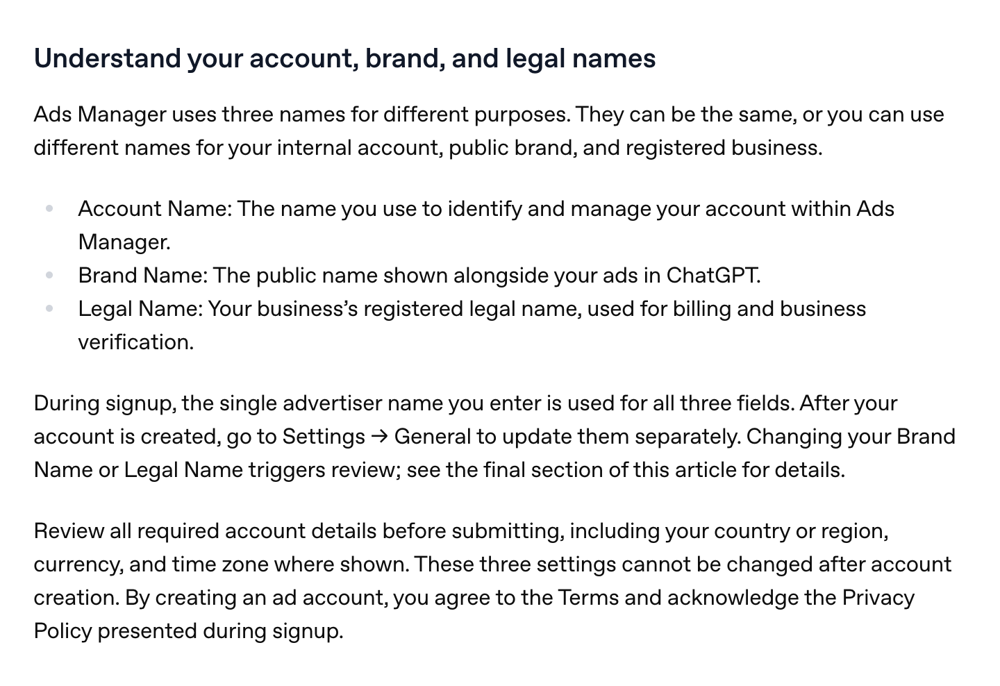

![Diagram: ChatGPT Ads account settings in three tiers. Locked at signup: country or region, currency, time zone. Editable with review: brand name (shown next to your ads; ads pause until approved) and legal name (billing and business verification; review restarts, ads may pause). Free: account name, used only inside Ads Manager. Self-serve access depends on where the legal entity that advertises and is billed is based; the 2026-10-26 list has 89 countries and regions, without mainland China or Hong Kong.](fig2-account-setup-tiers.png)
TL;DR
The hardest thing to change in ChatGPT Ads is not an ad. It is the signup page. Country or region, currency and time zone are fixed once the account exists, so decide which entity pays before you fill them in.
On October 21 OpenAI opened ChatGPT Ads in 26 more countries, 89 in total, and said more than 100,000 advertisers have run campaigns. More new accounts also means more accounts set up wrong. This piece is for advertisers who have not opened an account yet. It uses OpenAI's Help Center pages captured October 26 and no numbers from any ad account I work on.

The Help Center says: "These three settings cannot be changed after account creation." The three are country or region, currency and time zone. The advertiser name you enter at signup becomes all three account names. After signup you can change each name separately, at different costs.
1. Pick the paying entity first. The availability page says "the legal entity that will advertise and be billed must be based in a country listed as available below." What counts is where that entity is based, not your target market. The October 26 list has no mainland China and no Hong Kong. Once the entity is settled, fill in the country or region to match it. If your country is not listed, you can still sign up, and OpenAI says it will notify you when access opens.
2. Pick the time zone of the team that owns the budget. The budget pacing page says your daily budget is "an average daily amount over the Sunday–Saturday budget week in your ad account's timezone." Lock the time zone and you also lock where each budget week starts and ends.
3. Get the brand name right the first time. It is the name people see next to your ads in ChatGPT. Check all three names right after signup and change them before your first ad runs, so a rename never pauses a live campaign.
Getting ready. Decide which legal entity will advertise and pay, and check that it is on the list. Use the name you want shown in ads as the brand name and the registered company name as the legal name. When you add a card, you may see a temporary authorization hold that verifies it. The billing page says the amount varies by country and is requested in the billing currency saved for your account, and your bank may show it in your card's currency. It is not an ad charge. It is released after verification, though it may stay visible for 8 days or longer depending on your bank.
Already live. Check the three names in Settings → General. If you have to change the brand name, pick a week when a pause will not hurt.
Watching. Nothing to do yet. Check the list on the day you sign up.
Running several brands. OpenAI asks for one account per advertiser. Once you belong to 10 ad accounts, including ones you were invited to, you cannot create another yourself.
Write the three settings and the three names on one page, go through them with whoever handles billing, then sign up.
A question for you: which country is your paying entity based in, and is it on the list? Reply with your category and that country, and I will collect the common blockers.
No. OpenAI's Help Center says country or region, currency and time zone cannot be changed after the account is created.
The account name identifies the account inside Ads Manager. The brand name is the public name shown alongside your ads in ChatGPT. The legal name is your registered business name, used for billing and business verification. The advertiser name entered at signup fills all three; after signup you can change them separately in Settings → General.
Yes. A brand name change triggers brand review, and ads pause until the new name is approved. A legal name change restarts business review and may pause ads. An account name change triggers no review.
The legal entity that will advertise and be billed must be based in a country on OpenAI's availability list. On October 26, 2026 the list had 89 countries and regions, without mainland China or Hong Kong. You can still sign up from elsewhere, and OpenAI says it will notify you when access opens.
Once you belong to 10 ad accounts, counting the ones you created and the ones you were invited to, you cannot create another yourself, but you can still be invited. OpenAI asks for a separate account for each advertiser.
Stan Lu · ChatGPT Ads · Going Global. I write explainers on official ChatGPT Ads updates, with sources split into OpenAI, coverage, and my own reading.
Series: ChatGPT Ads Update Explainer · Previous: Product feed campaigns: 5 checks before you upload · 中文版
Published 2026-11-12 · Last updated: 2026-11-12